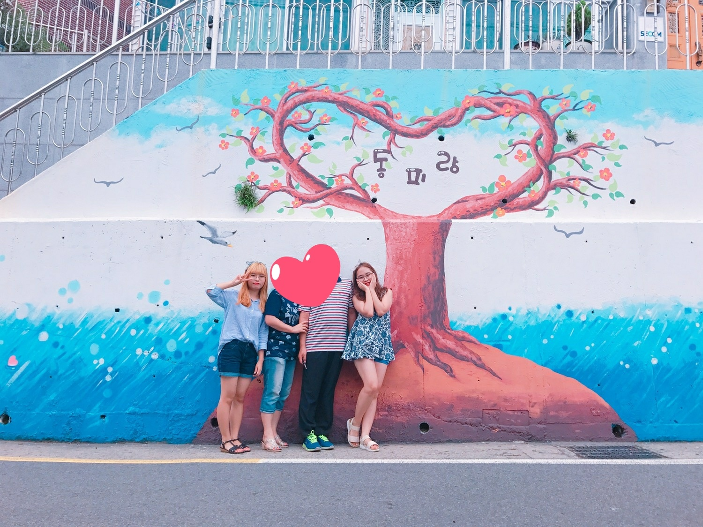
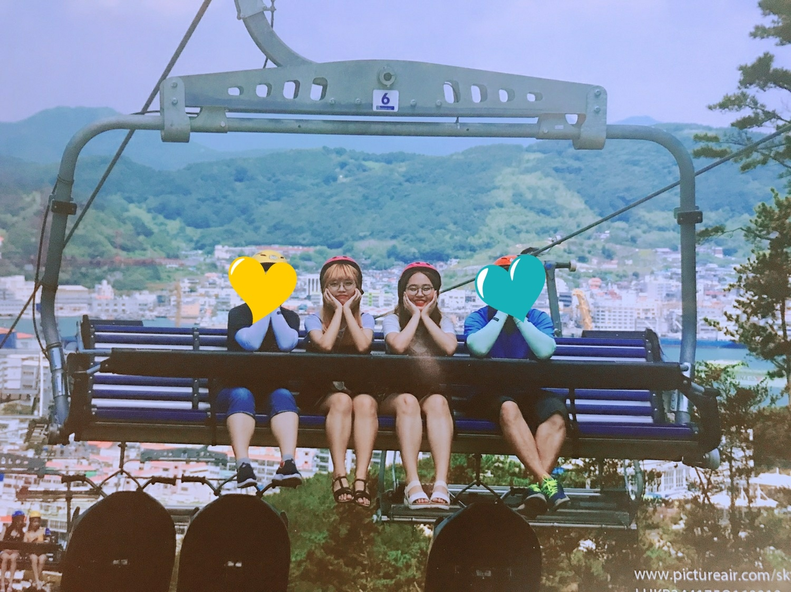
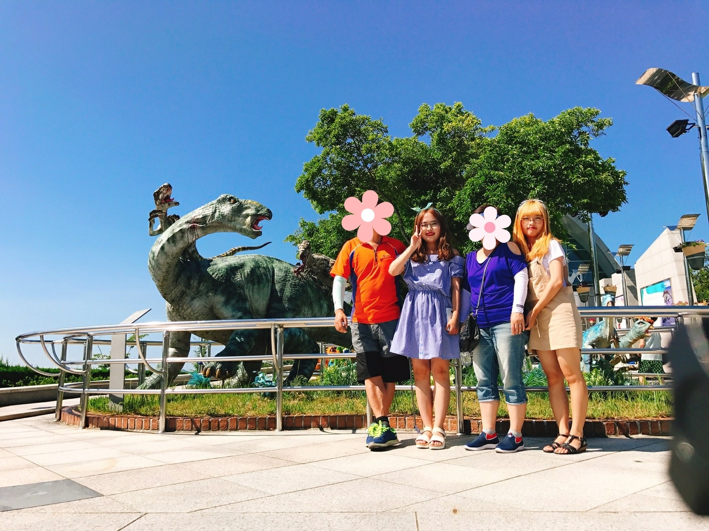

1. 동피랑 벽화마을

산책할 겸 돌아다니며 벽화에 그려진 그림들을 구경하면서 사진찍는 스팟이 많아
사진찍기 좋은 장소였다.
너무 넓어 다리가 많이 아프긴 했지만, 예쁜 사진들을 찍으며 좋은 추억을 쌓아서 많이 힘들진 않았다.
걸어야하는 시간이 많으니
운동화 신고 가는거 추천!!
2. 루지체험장

태어나서 처음으로 루지라는 것을 타봤다.
각자 카트에 타서 직접 조종하며 정해진 코스로 내려오는 레이싱인데, 해보지 못한 경험이라 설레이기도 했지만 무섭기도 했다.
막상 타보니 무서움은 사라지고 속도감도 있어서 스릴있고 너무 재밌어서 가족들이랑 3번씩 탔다ㅎㅎ
가족들끼리도 재밌고, 친구들이나 커플들끼리 놀러와도 재밌는 코스인거 같다.
3. 공룡박물관

마지막 날 구경하면서 집에 가기전에 공룡박물관에 들렀다.
전시된 공룡들이 섬세하게 잘 표현되어 있어서 가까이 갔을 때 조형물인데도 불구하고 실제 공룡처럼 무섭다는 느낌이 들었다.
야외에 구경할 것들이 많아서
더무 더운 여름날이라면 비추!!! 여름날은 피해서 가세요!